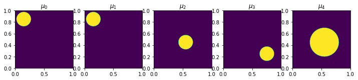
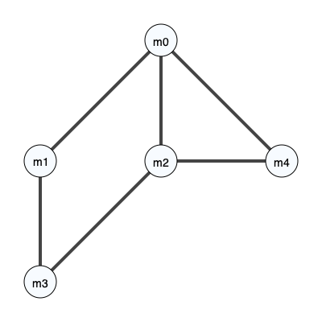
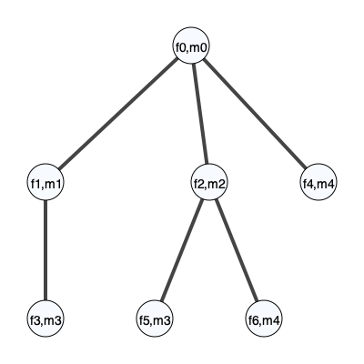
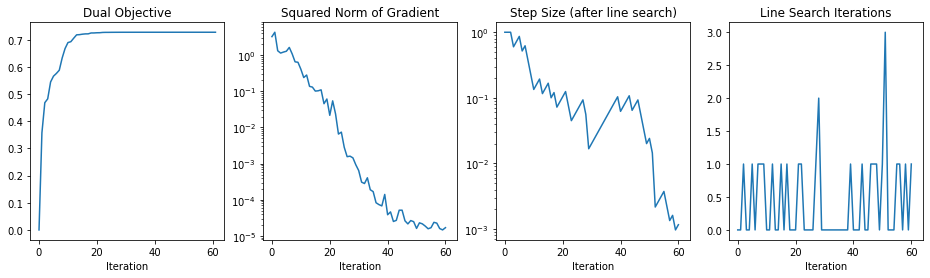

Introduction to MMOT with Pairwise Costs#
[1]:
from mmot import MMOTSolver
import numpy as np
import matplotlib.pyplot as plt
[2]:
# Grid of size n1 x n2
n1 = 512 # x axis
n2 = 512 # y axis
x, y = np.meshgrid(np.linspace(0.5/n1,1-0.5/n1,n1), np.linspace(0.5/n2,1-0.5/n1,n2))
r = 0.125
# positions = np.array([[0.25,0.75],
# [0.5, 0.75],
# [ 0.55,0.35],
# [0.65,0.25]])
positions = np.array([[0.15,0.85],
[ 0.15,0.85],
[0.55,0.45],
[0.75,0.25]])
# measures = [None]*len(positions)
measures = [None]*(len(positions) +1 )
for i in range(len(positions)):
xc,yc = positions[i]
measures[i] = np.zeros((n2, n1))
measures[i][(x-xc)**2 + (y-yc)**2 < r**2] = 1
# Normalize
measures[i] *= n1*n2 / np.sum(measures[i])
measures[4] = np.zeros((n2, n1))
measures[4][(x-positions[2][0])**2 + (y-positions[2][1])**2 < 4*r**2] = 1
measures[4] *= n1*n2 /np.sum(measures[4])
# Plot mu and nu
# fig, ax = plt.subplots(1, len(positions), figsize=(12,4))
# for i in range(len(positions)):
# ax[i].imshow(measures[i], origin='lower', extent=(0,1,0,1))
# ax[i].set_title("$\\mu_{{ {:0d} }}$".format(i))
fig, ax = plt.subplots(1, len(measures), figsize=(12,4))
for i in range(len(measures)):
ax[i].imshow(measures[i], origin='lower', extent=(0,1,0,1))
ax[i].set_title("$\\mu_{{ {:0d} }}$".format(i))

[3]:
unroll_node = 0
# The set A that defines the pairwise costs
# edge_list = [[0,1],
# [0,2],
# [1,3],
# [2,3]]
edge_list = [[0,1],
[0,2],
[1,3],
[2,3],
[0,4],
[2,4]]
prob = MMOTSolver(measures, edge_list, x, y, unroll_node)
prob.Visualize('original', filename='CostGraph.svg')
prob.Visualize(filename='UndirectedTree.svg')
prob.Visualize(4,filename='DirectedTree.svg')


[4]:
res = prob.Solve(max_its=200, step_size=1.0, ftol_abs=1e-10, gtol_abs=1e-5)
Iteration, StepSize, Cost, Error, Line Its
0, 1.0000, 3.5737e-01, 3.2308e+00, 0
10, 0.1344, 6.9302e-01, 4.0705e-01, 0
20, 0.1040, 7.2609e-01, 2.1610e-02, 0
30, 0.0201, 7.2775e-01, 6.4257e-04, 0
40, 0.0623, 7.2779e-01, 3.8667e-05, 0
50, 0.0121, 7.2780e-01, 1.6185e-05, 1
60, 0.0006, 7.2780e-01, 1.6975e-05, 1
60, 0.0006, 7.2780e-01, 1.6975e-05, 1
Terminating due to small change in objective.
[5]:
fig, axs = plt.subplots(ncols=4,sharex=True,figsize=(16,4))
axs[0].plot(res.costs)
axs[0].set_title('Dual Objective')
axs[0].set_xlabel('Iteration')
axs[1].semilogy(res.grad_sq_norms)
axs[1].set_title('Squared Norm of Gradient')
axs[1].set_xlabel('Iteration')
axs[2].semilogy(res.step_sizes)
axs[2].set_title('Step Size (after line search)')
axs[2].set_xlabel('Iteration')
axs[3].plot(res.line_its)
axs[3].set_title('Line Search Iterations')
axs[3].set_xlabel('Iteration')
plt.show()

[ ]: